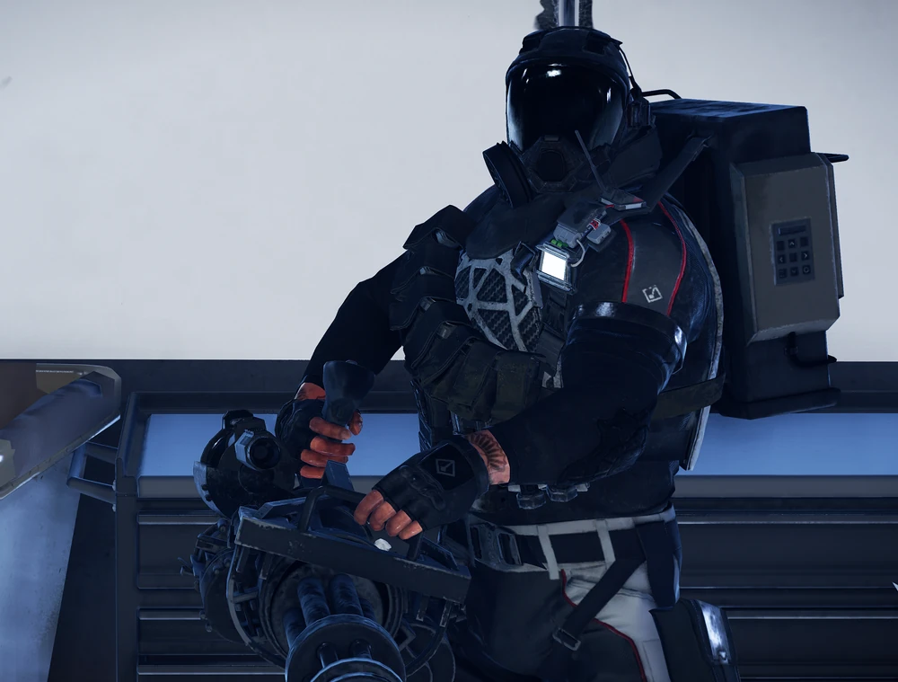
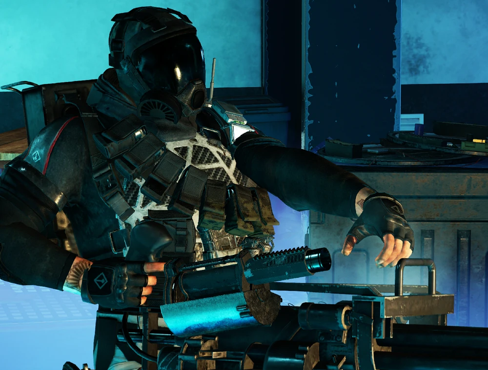
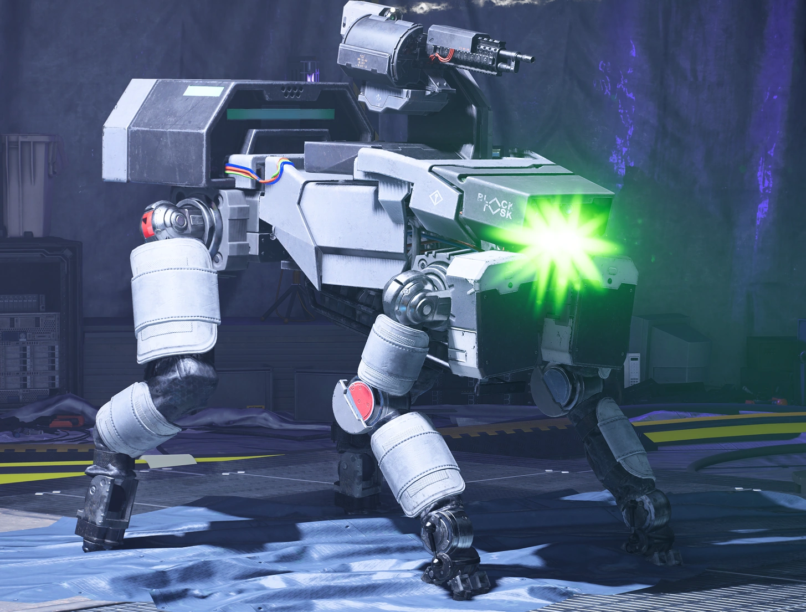
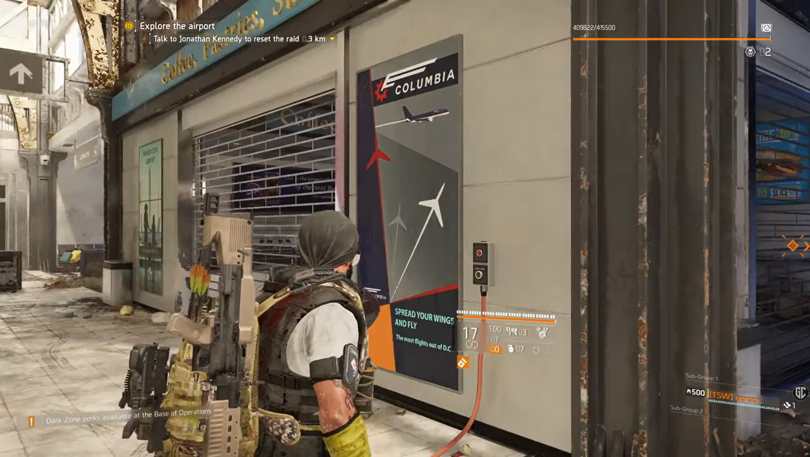
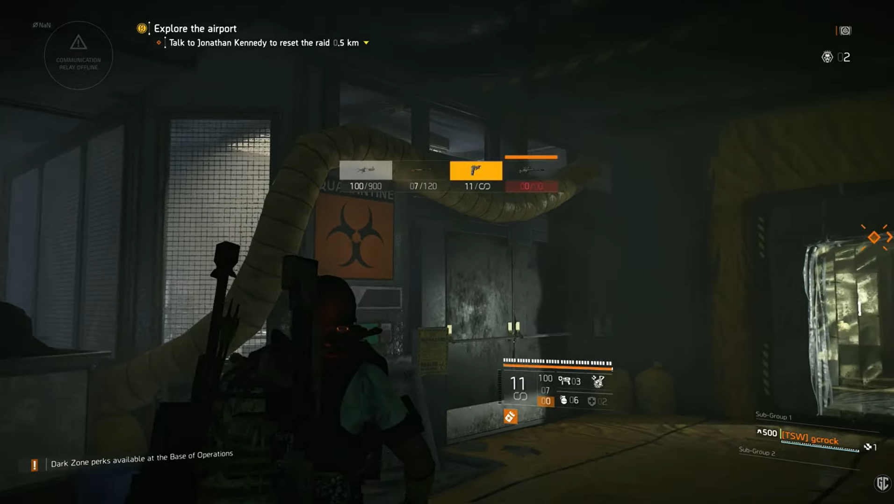
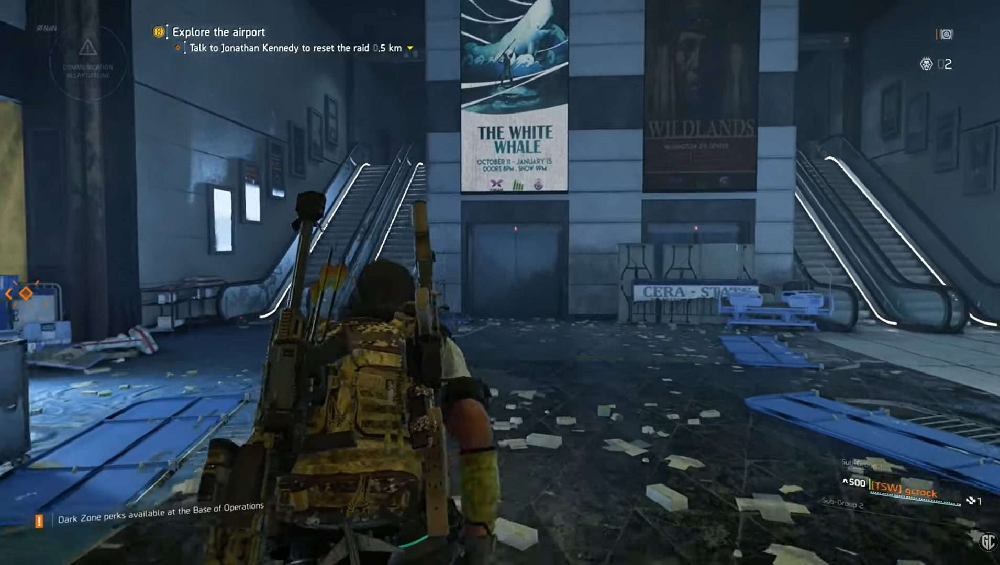
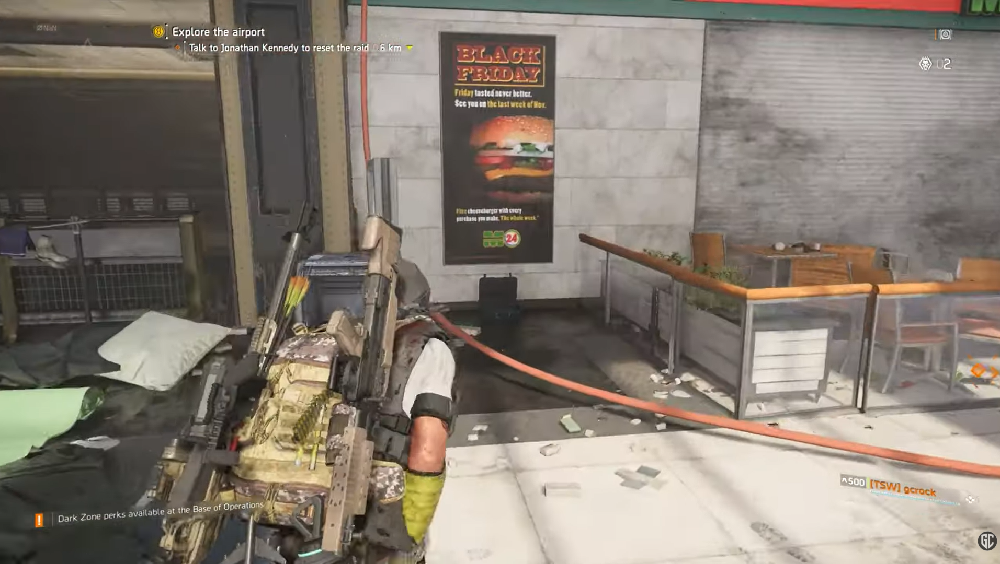

A melhor porta de entrada
- Mais amigável que Iron Horse para grupos iniciantes
- Ajuda a aprender call, posicionamento e função
- Permite evoluir build e disciplina de raid
- É ótima para criar rotina semanal com clã
A primeira raid de The Division 2, e continua sendo a porta de entrada ideal para quem quer começar no endgame de 8 jogadores. Ela mistura dano consistente, divisão de funções, controle de adds e mecânicas que exigem coordenação, mas ainda é a raid mais acessível para grupos que querem aprender. Também é aqui que mora uma das exóticas mais famosas do jogo: a Eagle Bearer.
Dark Hours é lembrada pelos encontros bem definidos e por exigir que o time mantenha ritmo e disciplina. Cada boss pede uma leitura um pouco diferente, e isso torna a raid ótima para ensinar fundamentos de grupo.

O primeiro chefe (boos) da raid Operação Dark Hours (Hora Sombria) em The Division 2 é o chefe Boomer.



O segundo grande teste da Raid Operação Dark Hours em The Division 2 é o confronto contra Weasel, Dizzy e Ricochet.


O terceiro grande teste da Raid Operação Dark Hours em The Division 2 é a luta contra os cães de guerra Buddy e Lucy.

O quarto grande teste da raid Operação Dark Hours em The Division 2 é o DDP-52 Razorback.
As chaves ajudam na abertura do baú final da raid e fazem parte da rotina de farm organizada para a Eagle Bearer.

Localize a chave na área seguinte ao primeiro encontro, antes de avançar para o próximo setor da raid.

Procure a chave no trajeto após o segundo encontro, antes da área de Lucy e Buddy.

A chave fica na rota posterior ao terceiro encontro e deve ser coletada antes do avanço final.

Use as chaves para abrir o baú final e aumentar as chances de obter recompensas importantes da raid.
Dark Hours premia grupos que entendem o básico muito bem. Isso significa levar builds sólidas, confortáveis e alinhadas à função do jogador, não só sets fortes no papel.
Ótima para quem vai desempenhar função de dano principal na raid.
Boa para jogadores com mira forte e papel mais técnico em encontros específicos.
Perfeita para quem quer entrar na raid com mais margem de erro e consistência.
A exótica mais icônica de Dark Hours merece página própria e funciona como excelente ponte entre raids, exóticas e builds DPS.
Aprenda os fundamentos de Dark Hours, prepare sua build, entenda os encontros principais e organize suas runs semanais para aumentar as chances de obter a Eagle Bearer.